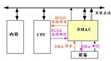

收藏
1141
有用+1
已投票
查看我的收藏
DMA(Direct Memory Access，直接内存存取) 是所有现代电脑的重要特色，它允许不同速度的硬件装置来沟通，而不需要依赖于 CPU 的大量中断负载。否则，CPU 需要从来源把每一片段的资料复制到暂存器，然后把它们再次写回到新的地方。在这个时间中，CPU 对于其他的工作来说就无法使用。
- 中文名
- 直接存储器访问
- 外文名
- Direct Memory Access
- 缩 写
- DMA
- 功 能
- 不同速度的硬件装置来沟通
DMADMA原理
编辑DMA 传输将数据从一个地址空间复制到另外一个地址空间。当CPU 初始化这个传输动作，传输动作本身是由 DMA 控制器来实行和完成。典型的例子就是移动一个外部内存的区块到芯片内部更快的内存区。像是这样的操作并没有让处理器工作拖延，反而可以被重新排程去处理其他的工作。DMA 传输对于高效能 嵌入式系统算法和网络是很重要的。

DMA
在实现DMA传输时，是由DMA控制器直接掌管总线，因此，存在着一个总线控制权转移问题。即DMA传输前，CPU要把总线控制权交给DMA控制器，而在结束DMA传输后，DMA控制器应立即把总线控制权再交回给CPU。一个完整的DMA传输过程必须经过DMA请求、DMA响应、DMA传输、DMA结束4个步骤。DMADMA请求
CPU对DMA控制器初始化，并向I/O接口发出操作命令，I/O接口提出DMA请求。
DMADMA响应
DMA控制器对DMA请求判别优先级及屏蔽，向总线裁决逻辑提出总线请求。当CPU执行完当前总线周期即可释放总线控制权。此时，总线裁决逻辑输出总线应答，表示DMA已经响应，通过DMA控制器通知I/O接口开始DMA传输。
DMADMA传输
DMA控制器获得总线控制权后，CPU即刻挂起或只执行内部操作，由DMA控制器输出读写命令，直接控制RAM与I/O接口进行DMA传输。
在DMA控制器的控制下，在存储器和外部设备之间直接进行数据传送，在传送过程中不需要中央处理器的参与。开始时需提供要传送的数据的起始位置和数据长度。
DMADMA结束
当完成规定的成批数据传送后，DMA控制器即释放总线控制权，并向I/O接口发出结束信号。当I/O接口收到结束信号后，一方面停 止I/O设备的工作，另一方面向CPU提出中断请求，使CPU从不介入的状态解脱，并执行一段检查本次DMA传输操作正确性的代码。最后，带着本次操作结果及状态继续执行原来的程序。
由此可见，DMA传输方式无需CPU直接控制传输，也没有中断处理方式那样保留现场和恢复现场的过程，通过硬件为RAM与I/O设备开辟一条直接传送数据的通路，使CPU的效率大为提高。
DMADMA传送方式
编辑DMA技术的出现，使得外围设备可以通过DMA控制器直接访问内存，与此同时，CPU可以继续执行程序．那么DMA控制器与CPU怎样分时使用内存呢?通常采用以下三种方法：(1)停止CPU访内存；(2)周期挪用；(3)DMA与CPU交替访问内存．
DMA停止CPU访问内存
当外围设备要求传送一批数据时，由DMA控制器发一个停止信号给CPU，要求CPU放弃对地址总线、数据总线和有关控制总线的使用权．DMA控制器获得总线控制权以后，开始进行数据传送．在一批数据传送完毕后，DMA控制器通知CPU可以使用内存，并把总线控制权交还给CPU．图(a)是这种传送方式的时间图．很显然，在这种DMA传送过程中，CPU基本处于不工作状态或者说保持状态．

缺点: 在DMA控制器访内阶段，内存的效能没有充分发挥，相当一部分内存工作周期是空闲的。这是因为，外围设备传送两个数据之间的间隔一般总是大于内存存储周期，即使高速I/O设备也是如此。例如，软盘读出一个8位二进制数大约需要32us，而半导体内存的存储周期小于0.5us，因此许多空闲的存储周期不能被CPU利用．
DMA周期挪用
当I/O设备没有DMA请求时，CPU按程序要求访问内存；一旦I/O设备有DMA请求，则由I/O设备挪用一个或几个内存周期。
这种传送方式的时间图如下图(b)：

I/O设备要求DMA传送时可能遇到两种情况：
(1)此时CPU不需要访内，如CPU正在执行乘法指令。由于乘法指令执行时间较长，此时I/O访内与CPU访内没有冲突，即I/O设备挪用一二个内存周期对CPU执行程序没有任何影响。
(2)I/O设备要求访内时CPU也要求访内，这就产生了访内冲突，在这种情况下I/O设备访内优先，因为I/O访内有时间要求，前一个I/O数据必须在下一个访问请求到来之前存取完毕。显然，在这种情况下I/O 设备挪用一二个内存周期，意味着CPU延缓了对指令的执行，或者更明确地说，在CPU执行访内指令的过程中插入DMA请求，挪用了一二个内存周期。 与停止CPU访内的DMA方法比较，周期挪用的方法既实现了I/O传送，又较好地发挥了内存和CPU的效率，是一种广泛采用的方法。但是I/O设备每一次周期挪用都有申请总线控制权、建立线控制权和归还总线控制权的过程，所以传送一个字对内存来说要占用一个周期，但对DMA控制器来说一般要2—5个内存周期(视逻辑线路的延迟而定)。因此，周期挪用的方法适用于I/O设备读写周期大于内存存储周期的情况。
DMADMA与CPU交替访问内存
如果CPU的工作周期比内存存取周期长很多，此时采用交替访内的方法可以使DMA传送和CPU同时发挥最高的效率。
这种传送方式的时间图如下：
此图是DMA与CPU交替访内的详细时间图．假设CPU工作周期为1.2us，内存存取周期小于0.6us，那么一个CPU周期可分为C1和C2两个分周期，其中C1专供DMA控制器访内，C2专供CPU访内。
这种方式不需要总线使用权的申请、建立和归还过程，总线使用权是通过C1和C2分时制的。CPU和DMA控制器各自有自己的访内地址寄存器、数据寄存器和读/写信号等控制寄存器。在C1周期中，如果DMA控制器有访内请求，可将地址、数据等信号送到总线上。在C2周期中，如CPU有访内请求，同样传送地址、数据等信号。事实上，对于总线，这是用C1，C2控制的一个多路转换器，这种总线控制权的转移几乎不需要什么时间，所以对DMA传送来讲效率是很高的。
这种传送方式又称为“透明的DMA”方式，其来由是这种DMA传送对CPU来说，如同透明的玻璃一般，没有任何感觉或影响。在透明的DMA方式下工作，CPU既不停止主程序的运行，也不进入等待状态，是一种高效率的工作方式。当然，相应的硬件逻辑也就更加复杂。

词条图册
更多图册
词条标签：